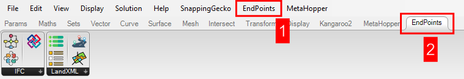
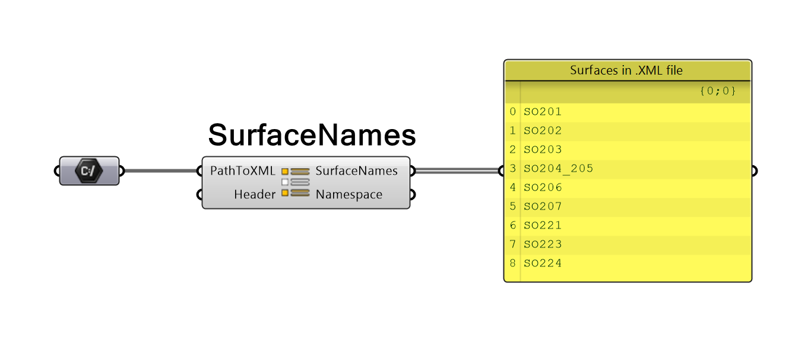
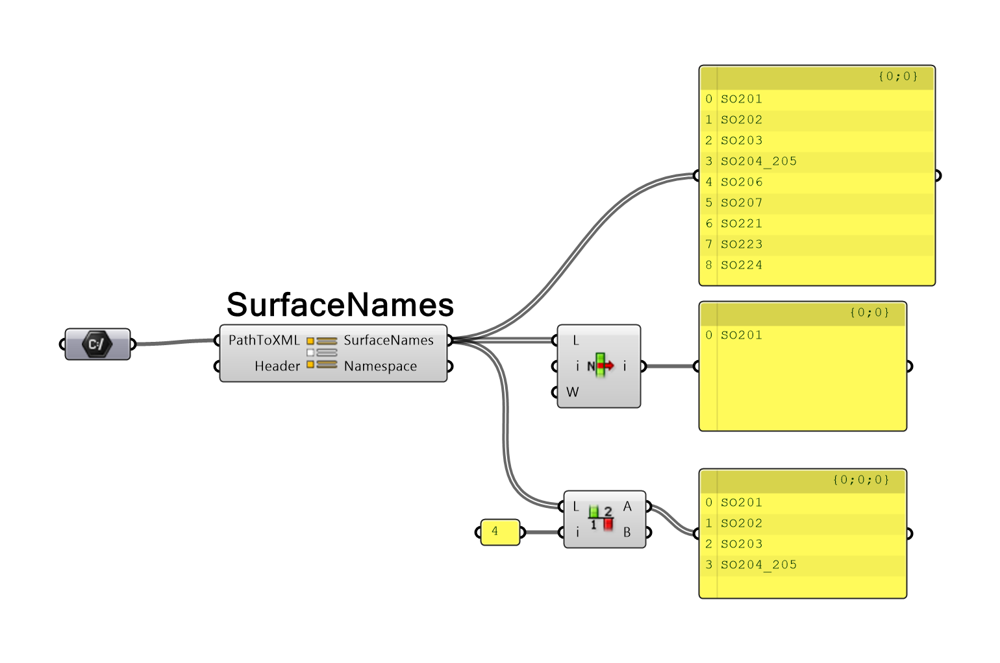
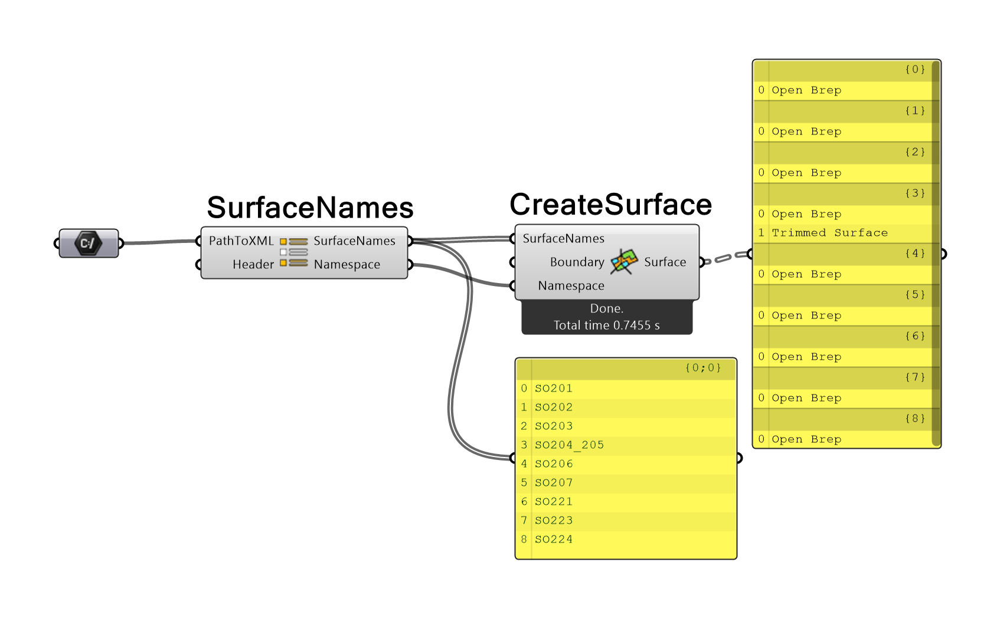
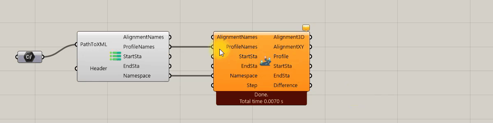
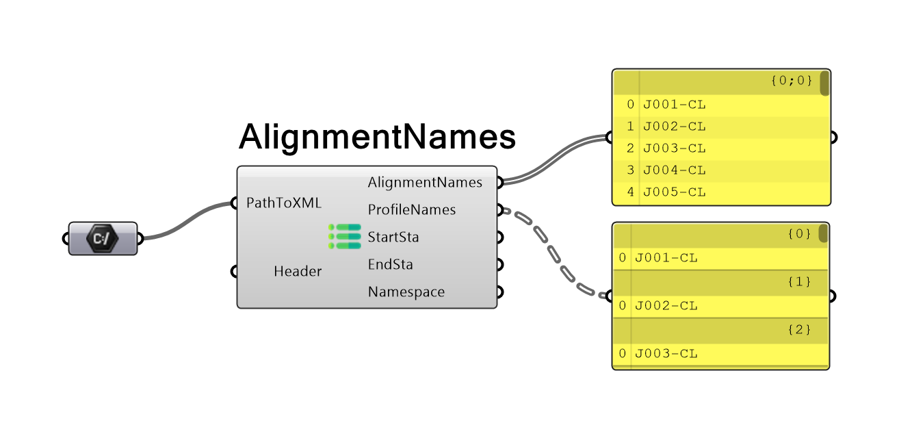
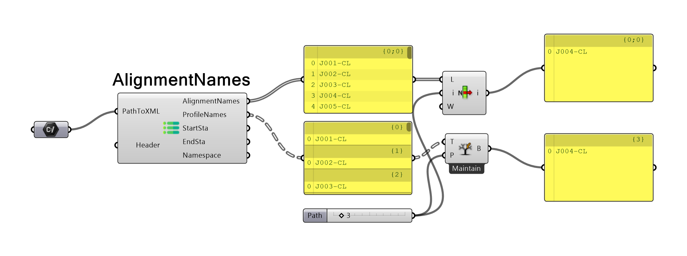
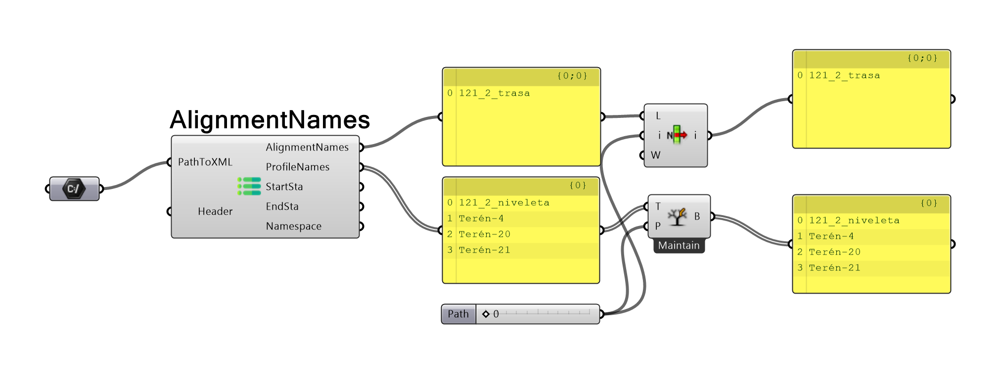
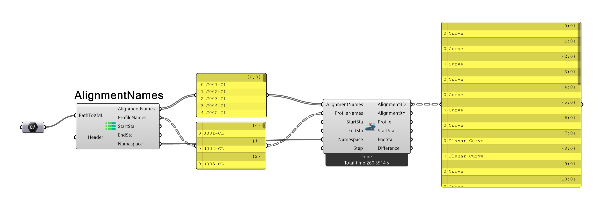
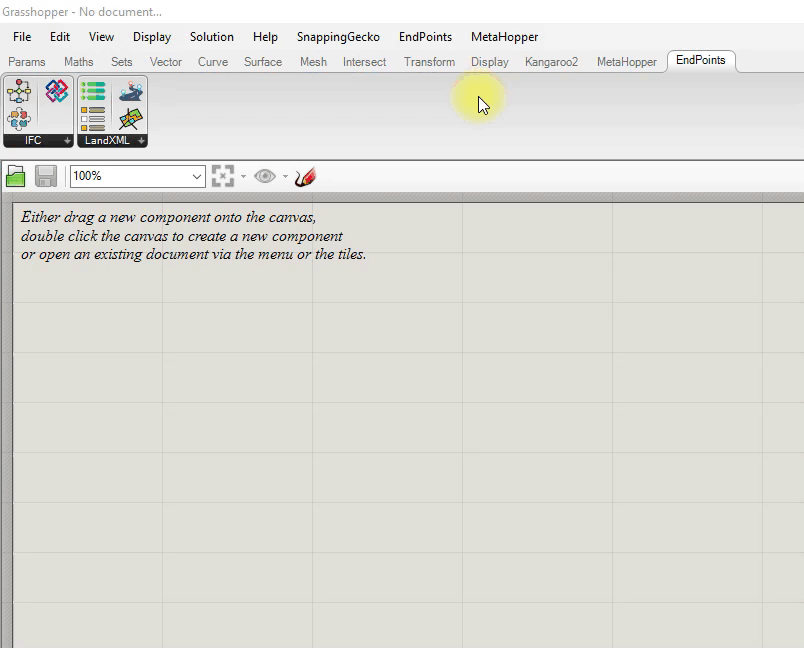

Hello dear Grasshopper user. Thank you for your interest in EndPoints plugin. The EndPoints plugin was developed for the
purpose of importing alignment and digital terrain model (DTM) into Rhino/Grasshopper from (Land)XML files and export your building/bridge/tunnel or other
to IFC file format. The imported elements (alignment and DTM) are intended to serve as initial input for design of various infrastructure parts
(e.g. bridges, tunnels, rail and road structure).The purpose of IFC exporter is to provide users with an easy-to-use but sufficiently comprehensive option for producing IFC
files directly from Rhino/Grasshopper. However, how the plugin is utilized is entirely up to the user.
LandXML schema is an open-source project for sharing topography of terrain data. It is widely used in civil engineering, especially in transportation
sector. Most of the software used in civil engineering is able to import and export data to LandXML format. The official LandXML schema website
can be found at http://www.landxml.org/. There are multiple LandXML schemas. The EndPoints plugin was tested against
schema 1.0 and 1.2. Schema 1.1 and 2.0 (working draft since 2014) should work as well but was no tested. In case of any inconvenience with schema 1.1 and
2.0, please contact author.
License and pricing
License and pricign policy for EndPoints plugin can be read here.
Version
Version: 1.2.2
Developed for Rhino 6 and higher.
Orientation in plugin
With the installation of the EndPoints plugin two new features will appear in the Grasshopper.

New tab in the top menu bar (1) with the plugin settings and new tab in the ribbon menu (2) with four components.
Coordinate system and units
Grasshopper is unitless and units depend on the actual unit system setting in Rhino. However, LandXML is not
unitless, and automatic unit conversion was not included into LandXML import engine. It is up to the user to know LandXML units
and set similar units in the Rhino.
Used coordinate systems are country/region dependend. It is not possible to include general approach for all coordinate systems. Therefore, only most commonly used coordinate systems
were implemented. Commonly used coordinate system for different regions can be found at https://epsg.io/ website.
Currently, the following coordinate systems are implemented and automatically transformed if applied in LandXML:
Otherwise, no transformation of coordinates is done, and components SurfaceNames and AlignmentNames will produce a warning message. If this occurs, please double check the result and contact the author for
coordinate system implementation.
Surface
Surface in LandXML is be represented by TIN surface or GRID surface. Both cases are implemented in EndPoints plugin. A surface in LandXML is written as a collection of numbered points and faces. Faces can be
defined by 3 or 4 points. Surface source data (boundaries, breaklines, contours etc.) are not imported to Grasshopper as they are not important for our cause.
Load .XML file with surfaces
To import a surface from an .XML file, you must first select the surfaces for import from the .XML file. To read all surface names in .XML file use SurfaceNames component.

The SurfaceNames component has two inputs and two outputs. First input parameter, PathToXML is string containing path to .XML file.
The input parameter Header is optional and should be used only if for unimplemented LandXML schemas. For implemented schemas, see About LandXML section.
The output parameter SurfaceNames is a list of all surfaces present in the .XML file. Second output parameter Namespace is a
plugin class with the information about the general .XML data and coordinate system.
Select surface
Next step is to select which surfaces user wants to import. This is fully up to user, and the selection should be performed according to user's habits.

Create surface
A surface can be created in multiple ways but always with CreateSurface component. Final surface can be represented by mesh (fast but less accurate),
unjoined triangle/quad surfaces (fast and accurate), or by joined surface (slow and accurate). For more information see settings section.

The CreateSurface component has three inputs and one output. First input parameter, SurfaceNames, is list of selected surface names which will be created.
The parameter Boundary is optional. If user provides list of closed curves to this parameter, only part of the triangle/quads with all corner points inside boundary will be created. Inner/outer
point location is assessed according to projection to word XY plane. Z coordinate is neglected. If a boundary is applied, the imported surface can be divided into multiple parts in some cases. If the whole surface is outside
curve nothing is created. Note that only closed curves can be used as boundary curves. If open curve is a boundary curve, it is ignored.
The parameter Namespace is mandatory and corresponds to the SurfaceNames output parameter Namespaces. It provides component with the information about .XML file so file does not have to be reopened.
The output parameter Surface is list of all imported surfaces represented by mesh/list of surfaces or signel brep.
If the import is performed correctly, the message "Done" with the information about the computational time is shown below component. In case of large surfaces, it is convenient to import surface first as a mesh
or unjoined surfaces and then apply the boundary curve. Please keep in mind that joining the surface into one large brep is the most CPU time consuming operation.
Alignment
Alignment (a general 3D curve) in LandXML is represented by horizontal and vertical profile curves. Both curves are defined by multiple geometrical entities. The horizontal profile (XY plane center line) is usually made up of straight lines, arcs, and transition curves.
Transition curves are named spirals in LandXML. Please note that only spiral "Clothoid" type is implemented in EndPoints plugin.
Other possible spiral types can be found here. If an unimplemented spiral type is present, the CreateAlignment component will produce
a warning message. In that case please, contact author and provide a .XML file to author. I will gladly implement new spiral types to EndPoints if possible.

The vertical profile (XZ plane profile curve) is represented by ProfAlign or ProfSurf type curve.
ProfAlign is created by points of vertical intersection (PVI), parabolic curves (ParaCurve), unsymmetric parabolic curve (UnsymParaCurve) or arcs (CircCurve). ProfiAlign is typically used for road and rail profile curves. ProfSurf is represented by list of 2D points (PntList2D). ProfSurf is typically used for exporting intersection of two surfaces (e.g. terrain and road slopes). Both types and all geometric entities of profile curves are implemented in EndPoints.
Load .XML file with alignment
To import an alignment from .XML, start by selecting alignment (horizontal profile) and profile (vertical profile) names for import from the .XML file. To read all alignment and profile names and other alignment data in .XML file, use AlignmentNames component.

The AlignmentNames component has two inputs and five outputs. First input parameter, PathToXML, is string containing path to .XML file.
Input parameter Header is optional and should be used if the LandXML schema is unimplemented. For implemented schemas, see About LandXML section.
Output parameter AlignmentNames is a list of all alignments (horizontal profiles) present in the .XML file. Second output parameter, ProfileNames, is a tree of all profiles (vertical profiles) present in .XML file.
The numbers of profiles can be higher then number of alignments, as one alignment can contain multiple profiles. Each branch contains all profiles which belong to the alignment at the same position as branch number.
In some cases (not so unusual), start and end stationing of horizontal and vertical profiles may not match. Alignment points which are not inside both domains cannot be calculated as only part of data is present. Therefore,
output parameters StartSta / EndSta were presented. Both outputs are trees with a min./max. valid stationing that can be reached on the alignment for each profile. Minimum stationing is always max. value of (vertical profile start stationing; horizontal profile start stationing).
Maximum stationing is always min. value of (vertical profile start stationing; horizontal profile start stationing).
Tree structure of StartSta / EndSta matches structure of ProfileNames output.
Last output parameter, Namespace, is a plugin class with the information about the general .XML data and coordinate system.
Select alignment (horizontal profile) and profile (vertical profile)
Next step is to select which alignment and profile user want to import. This is fully up to user and selection should be performed according to user's habits. However, the order of alignment and profile
should always respect following rule: alignment's list index is always equal to first index of the branch in the profile's Data Tree.

Of course, you can select multiple profiles for one alignment.

Create alignment
Alignment can be created in with CreateAlignment component. Final curve is represented by a NURBS curve on a proper coordinate.

CreateAlignment component has six inputs and outputs. First input parameter, AlignmentNames, is list of selected alignment names. Second input,
ProfileNames, is a Data Tree of selected profiles associated to each alignment. If above-mentioned alignment and profile order convention is not repsected
and profile name does not match associated alignment name, warning message is shown. Input StartSta and EndSta are optional inputs. It is Data Tree of required start and end stationing for each
imported curve. If stationing inputs are not used, alignment curves are created in their whole length according to min./max. valid stationing.
If start or end stationing input is defined by user, it must present as a Data Tree with value for each required profile. If user set stationing which is outside min./max. valid stationing warning message will appear and input will be ignored.
The parameter Namespace is mandatory and corresponds to the AlignmentNames output parameter Namespaces. It provides component with the info about .XML file so file does not have to be reopened.
Last input parameter, Step, is optional and represents the distance between consecutive points which are used for alignment curve creation as well as calculation of transition curves points. If Step value
is not defined, value defined in active setting profile is used. Otherwise, input parameter overrides value defined in settings and can be set individually for each component.
Please note, if step value is too small it can increase computation time needed for alignment import. If step value is too large, it will decrease precision of imported curve.
Output parameter Alignment3D is a Data Tree of all alignment 3D curves imported from .XML file. Second output parameter, AlignmentXY, is a Data Tree of all alignment (horizontal profiles) imported from .XML file. Horizontal
profile curves are placed in world XY plane according to its coordinates in .XML file. Output parameter Profile is a Data Tree of all profiles (vertical profiles) imported from .XML file. Vertical profile curves
are located in world XZ plane. Their X coordinate correspond with the stationing and Z coordinate with the elevation stated in .XML file. The AlignmentXY and Profile outputs are always imported in full length, which is present in
.XML file. On the other hand, Alignment3D is imported only between min. and max. stationing. Moreover, each vertical and horizontal profiles are imported as a list of sub curves which represent profile parts.
Last parameter, Difference, is a Data Tree of values with calculated length deviation between min./max. stationing and length of particular Alignment3D curve projection to XY plane.
If the Step value is set correctly, and import was performed correctly, Difference should be close to zero. With greater values of Step, deviation can increase.
It is up to the user to define limit that can be considered sufficient.
LandXML Settings
After clicking the LandXML Settings button in top menu bar, the plugin setings option dialog apperas. Here, you can set up different options for surface and alignment. Various import settings
can be also created and saved for future use.

Dialog consists of two tabs with various settings for surface and alignment import. Top dropdown menu contains predefined and saved profiles. If user did not set any setting profiles, default profile is always used.
New profiles can be easily created and saved for further use. To apply settings or save/load/delete profile, use the buttons at the bottom of the dialog.
Set: Apply current settings and keep dialog open. These settings will be lost if Rhino is closed.
Set and close: Apply current settings and close dialog. These settings will be lost if Rhino is closed.
Close: Close dialog.
Load: Load saved settings according to selected profile in top dropdown menu.
Set and save: Apply current settings. These settings will be saved to a profile selected in top dropdown menu. New profiles can be created if new profile name is provided. These profiles are kept even if Rhino is closed.
Delete: Delete current selected profile from saved profiles.
In Surface tab following options are present:
Mesh/Brep: If checked, surfaces are imported as meshes. Otherwise, surfaces are imported as surface or breps.
Join to polysurface: Surface triangles/quads are joined into one single polysurface. This is applied only if Brep is selected as a product of surface import. If surface is incorrectly defined in .XML file, joining can result in multiple polysurfaces.
If surface consist of huge number of triangles/quads, joining can be very demanding on computational time.
Tolerance: Tolerance used for position of surface point inside boundary curve and for triangle/quad creation. If 0 is inserted, then value of RhinoMath.ZeroTolerance is used.
Parallel: If checked, multiple processors are used for surface import.*
Number of precessors: Max. number of processors allowed for parallel computing. Applied only if parallel computing is alowed for surface import.**
In Alignment tab following options are present:
Initial curve division: Number of divisions of vertical profile curve during alignment point's XYZ coordinates calculation.***
Flow step: Default distance of consecutive alignment's points. Values is overwritten by Step input parameter if defined.
Parabolic curve step: Distance (stationing difference) between points used during calculation of parabolic curve (vertical profile). If length of parabolic curve is smaller, step is automatically changed to 1/10 curve length.
Transition curve step: Distance (stationing difference) between points used during calculation of transition curves (horizontal profile). If the length of transition curve is smaller, step is automatically changed to 1/10 curve length.
Tolerance Z: Tolerance used for Z coordination of alignment's defining points. If 0 is inserted, then value of RhinoMath.ZeroTolerance is used.
Parallel: If checked, multiple processors are used for alignment import.*
Number of processors: Max. number of precessors allowed for parallel computing. Applied only if parallel computing is allowed for alignment import.***
*Parallel computing is used in specific parts of import. Using parallel computing may not lead to speed up import. See time result under the CreateAlignment/CreateSurface component.
**If value is equal or smaller then 0, maximum number of processors is used.
***Alignment's defining points are calculated from horizontal (X, Y coordinates) and horizontal (Z coordinate) profile with specific algorithm. Algorithm divide profile curve to defined number of segments where Z coordinates are searched.
Best practices
Always check result and compare it with original data.
If large data are imported, import can be demanding on computational time. Separate import from other parts of script (internalize result, disable components).
Recalculate EndPoints LandXML components only if needed (.XML file changed).
When importing large surfaces use meshes first or unjoined breps. Join brep only after boundary is applied to specific area.
When importing large surface most time consuming operations are joining breps and showing result in Rhino.
Stationing is always defined on curve projection to world XY plane.
Length difference smaller then 0.1 mm (when using meters as default units) should be sufficient.
Step value from 0.1 m to 1.0 m should be sufficient.
Consider total length of alignment when defining step value.
Define and limit start and end stationing for alignment if possible. It will save your time.
Some uncommon rules (national code rules) may not be taken into account in LandXML files (personal experience). Always check result before design.
Always check imported alignment correctness. There are three basic checks you can do (check length difference, check curve curvature graph smoothness, check coordinates of important points at specific stationing)